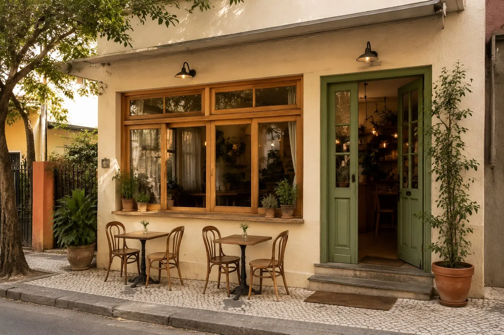
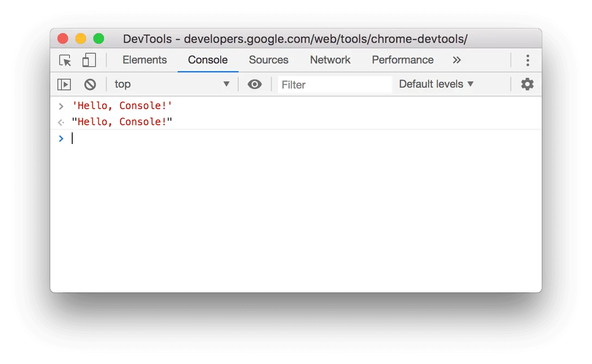

Fundamentos da Web, primeiro experimento e preparação do projeto.
Uma situação real para começar
O Café Aurora é um pequeno café de bairro. Hoje, informações como endereço, horário e produtos aparecem apenas em publicações de redes sociais e acabam se perdendo.
A proprietária quer um lugar simples e confiável onde qualquer pessoa possa conhecer o café. Antes de pensar em cores ou animações, precisamos responder: o que é um site, quais arquivos o formam e como o navegador consegue mostrá-los?
O que você vai aprender
Diferenciar Internet, Web, site e página.
Entender o papel do navegador, do servidor e do endereço.
Fazer um primeiro experimento com HTML.
Criar e abrir uma pasta de projeto no VS Code.
Criar o arquivo index.html com a estrutura mínima correta.
Visualizar, alterar e salvar a primeira página do Café Aurora.
Aula 1 — Como a Web funciona
Internet
É a infraestrutura que conecta computadores e redes ao redor do mundo.
Web
É um dos serviços que usa a Internet para disponibilizar páginas interligadas.
Site
É um conjunto organizado de páginas e recursos relacionados.
Página
É um documento individual que o navegador interpreta e apresenta.
As três tecnologias que encontraremos
HTML: organiza e dá significado ao conteúdo.
CSS: cuida da apresentação visual e do layout.
JavaScript: acrescenta comportamento e interação.
Neste começo, nosso foco será o HTML. Assim, cada tecnologia entra quando surge uma necessidade real no projeto.
O caminho de uma página
Você digita um endereço
↓
O navegador faz uma solicitação
↓
O servidor envia os arquivos
↓
O navegador interpreta e exibe a página
Pratique
Abra três sites que você usa. Em cada um, identifique o endereço, o navegador utilizado e pelo menos duas páginas diferentes do mesmo site.
Aula 2 — Seu primeiro contato com HTML
Antes de organizar um projeto completo, vamos experimentar duas marcações no Playground da MDN (abre em nova aba). Ele permite alterar um pequeno exemplo e observar o resultado imediatamente.
<h1>Café Aurora</h1>
<p>Café, encontros e bons momentos no coração do bairro.</p>
As marcações <h1> e <p> são chamadas de tags. A primeira indica o título principal; a segunda, um parágrafo. A maior parte dos elementos possui uma tag de abertura, conteúdo e uma tag de fechamento.
Experimente
Troque o nome do café pelo nome de outro pequeno negócio.
Altere a frase do parágrafo.
Apague apenas uma tag de fechamento e observe o que acontece. Depois, corrija.
Por que não faremos todo o site aqui?
Esse ambiente é excelente para testar trechos curtos. Um site real precisa de pasta própria, documento completo, imagens, várias páginas e arquivos separados. Por isso, agora passaremos ao ambiente principal do projeto.
Aula 3 — Preparando o projeto no VS Code
Instale o VS Code para Windows. Em computador compartilhado, siga a orientação do professor antes de instalar.
Crie uma pasta chamada cafe-aurora.
No VS Code, use Arquivo → Abrir Pasta e selecione essa pasta.
Um nome simples evita problemas.
Em nomes de arquivos e pastas para a Web, prefira letras minúsculas, sem espaços e sem acentos. Quando precisar separar palavras, use hífen: cafe-aurora.
No painel lateral do VS Code, crie o arquivo index.html. O nome index é tradicionalmente usado para a página inicial de uma pasta ou de um site.
A pasta representa o projeto inteiro. Dentro dela ficarão os documentos, imagens, estilos e scripts que construiremos nos próximos capítulos.
Aula 4 — O primeiro documento completo
Digite no arquivo index.html:
<!DOCTYPE html>
<html lang="pt-BR">
<head>
<meta charset="UTF-8">
<meta name="viewport" content="width=device-width, initial-scale=1.0">
<title>Café Aurora</title>
</head>
<body>
<h1>Café Aurora</h1>
<p>Café, encontros e bons momentos no coração do bairro.</p>
</body>
</html>
Trecho
Função
<!DOCTYPE html>
Informa que o documento usa o HTML atual.
<html lang="pt-BR">
É o elemento principal e informa o idioma da página.
<head>
Reúne configurações e informações sobre o documento.
charset
Permite exibir corretamente acentos e outros caracteres.
viewport
Prepara a página para diferentes larguras de tela.
<title>
Define o texto mostrado na aba do navegador.
<body>
Contém o que será apresentado na página.
Visualizando a página
No painel de extensões do VS Code, procure Live Preview e confirme que o publicador é Microsoft. A página oficial da extensão está no Visual Studio Marketplace. Depois de instalada, clique com o botão direito em index.html e escolha Show Preview.
Visualização local não é publicação.
Neste momento, a página funciona apenas no seu computador. Colocar o site na Internet será uma etapa posterior do projeto.
Experimente
Troque o texto de <title> e observe a aba.
Altere o conteúdo de <h1> e <p>.
Salve o arquivo e recarregue a visualização, se necessário.
Primeiro contato com DevTools
Na página aberta no navegador, clique com o botão direito sobre o título e escolha Inspecionar. No painel Elements, localize o h1, dê dois cliques em seu texto e troque-o temporariamente por “Café Aurora — teste”.
A mudança existe somente naquela visualização. Recarregue a página e o texto original voltará. Para tornar a alteração permanente, edite e salve o index.html no VS Code.
Erros comuns
Salvar como index.html.txt.
Criar o arquivo fora da pasta cafe-aurora.
Esquecer o fechamento de uma tag.
Alterar o arquivo e não salvá-lo antes de verificar o resultado.
Digitar conteúdo visível fora do elemento <body>.
Prática aplicada
Antes de </body>, acrescente:
<h2>Uma pausa especial no seu dia</h2>
<p>Conheça cafés selecionados, receitas artesanais e um ambiente acolhedor.</p>
Desafio: reescreva o parágrafo como se você estivesse recebendo uma pessoa que nunca visitou o Café Aurora.
Verifique sua aprendizagem
Consigo explicar a diferença entre Internet, Web, site e página.
Sei qual é o papel do navegador e do servidor.
Criei e abri corretamente a pasta do projeto.
Meu arquivo se chama index.html.
A página possui a estrutura mínima e abre no navegador.
Consigo alterar um texto, salvar e visualizar o resultado.
Até aqui
Temos um primeiro documento correto e funcional. Ainda não usamos cores, imagens, menus, CSS ou JavaScript. A página ganhará conteúdo e estrutura antes de receber a identidade visual.
Transfira o aprendizado
Sem criar outro site completo, imagine uma barbearia, papelaria ou projeto comunitário. Escreva apenas um h1, um parágrafo de apresentação e um título de aba adequados a esse novo contexto.
Web I • 8 horas
Capítulo 2 — Construindo a página inicial
Conteúdo, hierarquia, listas, links, imagens e informações do documento.
O que a página precisa comunicar?
A primeira versão abre no navegador, mas ainda não responde às perguntas de quem visita o Café Aurora: o que ele oferece, quais são seus diferenciais, em que horário funciona e por que vale a pena conhecê-lo?
Neste capítulo, construiremos uma página inicial bem organizada. Ela ainda será simples visualmente, porque primeiro o conteúdo precisa estar correto e compreensível.
O que você vai aprender
Reconhecer elementos, tags, conteúdo e atributos.
Organizar títulos e subtítulos em uma hierarquia coerente.
Usar parágrafos, ênfase, listas e comentários.
Criar links internos e externos e entender caminhos relativos.
Inserir imagens com texto alternativo e dimensões.
Alguns elementos recebem atributos, informações adicionais escritas na tag de abertura. Em <html lang="pt-BR">, por exemplo, lang informa o idioma do documento.
Títulos formam uma hierarquia
O HTML oferece títulos de <h1> a <h6>. Eles não devem ser escolhidos pelo tamanho visual, mas pelo nível de cada assunto.
<h1>: assunto principal da página.
<h2>: grandes seções desse assunto.
<h3>: subdivisões de uma seção.
<h1>Café Aurora</h1>
<h2>Destaques da casa</h2>
<h3>Café coado</h3>
<p>Grãos selecionados e preparo cuidadoso.</p>
<h3>Pães artesanais</h3>
<p>Produção diária com ingredientes frescos.</p>
Aparência vem depois.
Não pule de <h1> para <h4> apenas porque o tamanho parece melhor. O CSS será usado mais adiante para controlar a aparência.
Aula 2 — Textos, listas e comentários
Use <strong> quando uma informação tiver forte importância e <em> para dar ênfase ao trecho.
<p><strong>Aberto de segunda a sábado.</strong></p>
<p>Um espaço <em>acolhedor</em> para sua pausa.</p>
Listas não ordenadas
Use <ul> quando a ordem dos itens não altera o sentido:
<ol>
<li>Escolha seu café</li>
<li>Selecione um acompanhamento</li>
<li>Faça seu pedido no balcão</li>
</ol>
Comentários no código
<!-- Esta seção será ampliada quando o cardápio estiver pronto. -->
Comentários ajudam a registrar decisões para quem edita o arquivo e não aparecem na página. Mesmo assim, fazem parte do código enviado ao navegador: nunca coloque senhas, dados pessoais ou informações secretas neles.
Pratique
Transforme o texto abaixo em uma lista HTML adequada: “Wi-Fi, tomadas disponíveis, ambiente climatizado e espaço para bicicletas”. Explique por que escolheu <ul> ou <ol>.
Aula 3 — Links e caminhos
Um link é criado com o elemento <a>. O atributo href informa o destino.
O valor após # deve ser igual ao id do elemento de destino. Cada id deve ser único na página.
Endereço absoluto
Um endereço absoluto contém o destino completo e costuma apontar para outro site:
<a href="https://developer.mozilla.org/pt-BR/">Consultar a MDN</a>
Caminho relativo
Um caminho relativo parte da localização do arquivo atual. Quando criarmos uma segunda página na mesma pasta, o link poderá ser:
<a href="cardapio.html">Ver cardápio</a>
Não crie um destino inexistente.
Esse link só deverá entrar no projeto quando o arquivo cardapio.html existir. Assim evitamos uma navegação quebrada.
Link e botão têm funções diferentes.
Use links para navegar até outro local ou documento. Botões serão usados para executar ações, principalmente quando começarmos o JavaScript. Evite href="#" como destino improvisado.
Pratique
Crie um link próximo ao início da página que leve até uma seção com id="destaques". Teste o link e confirme se o endereço do navegador passou a terminar em #destaques.
Aula 4 — Imagens e informações da página
Dentro da pasta cafe-aurora, crie uma pasta chamada img. Para realizar a atividade sem precisar procurar uma foto, você pode baixar a imagem preparada para o Café Aurora.
Imagem pronta para a atividade
Imagem didática criada especificamente para o projeto fictício Café Aurora.
Em um projeto real, você também poderá usar uma foto produzida por você, fornecida pelo responsável do negócio ou obtida com autorização de uso. Renomeie o arquivo de modo descritivo antes de colocá-lo na pasta.
<img
src="img/ambiente-cafe.webp"
alt="Salão do Café Aurora com mesas de madeira e plantas"
width="1200"
height="800"
>
src indica onde o arquivo está.
alt comunica o conteúdo ou a função da imagem a quem não consegue vê-la.
width e height informam suas proporções e ajudam o navegador a reservar o espaço correto.
Um bom texto alternativo depende do contexto.
Descreva o que é importante para compreender a página, sem começar por “imagem de”. Se a imagem for apenas decorativa e não comunicar nada, use alt="".
Imagem com legenda
<figure>
<img
src="img/ambiente-cafe.webp"
alt="Salão do Café Aurora com mesas de madeira e plantas"
width="1200"
height="800"
>
<figcaption>Um espaço tranquilo para conversar, estudar ou trabalhar.</figcaption>
</figure>
Título e descrição do documento
Dentro de <head>, atualize:
<title>Café Aurora — Café e produtos artesanais no bairro</title>
<meta
name="description"
content="Conheça o Café Aurora, seus cafés especiais, produtos artesanais, ambiente e horário de atendimento."
>
O título identifica a página na aba e em outros contextos. A descrição resume o conteúdo para mecanismos de busca e compartilhamentos, embora sua exibição não seja garantida.
Versão consolidada da página
Compare seu arquivo com esta versão. Não copie apenas por copiar: identifique a função de cada elemento.
Código completo para conferência
<!DOCTYPE html>
<html lang="pt-BR">
<head>
<meta charset="UTF-8">
<meta name="viewport" content="width=device-width, initial-scale=1.0">
<meta
name="description"
content="Conheça o Café Aurora, seus cafés especiais, produtos artesanais, ambiente e horário de atendimento."
>
<title>Café Aurora — Café e produtos artesanais no bairro</title>
</head>
<body>
<h1>Café Aurora</h1>
<p>Café, encontros e bons momentos no coração do bairro.</p>
<a href="#destaques">Conheça nossos destaques</a>
<h2 id="destaques">Destaques da casa</h2>
<h3>Café coado</h3>
<p>Grãos selecionados e preparo cuidadoso.</p>
<h3>Pães artesanais</h3>
<p>Produção diária com ingredientes frescos.</p>
<h2>Nossos diferenciais</h2>
<ul>
<li>Cafés especiais</li>
<li>Pães artesanais</li>
<li>Opções vegetarianas</li>
<li>Wi-Fi e tomadas disponíveis</li>
</ul>
<figure>
<img
src="img/ambiente-cafe.webp"
alt="Salão do Café Aurora com mesas de madeira e plantas"
width="1200"
height="800"
>
<figcaption>Um espaço tranquilo para conversar, estudar ou trabalhar.</figcaption>
</figure>
<h2>Horário de atendimento</h2>
<p><strong>De segunda a sábado, das 8h às 19h.</strong></p>
</body>
</html>
Valide o HTML antes de avançar
O validador ajuda a encontrar erros de marcação que o navegador pode tentar corrigir silenciosamente. Salve seu arquivo e abra o HTML Checker do W3C (abre em nova aba).
Escolha a opção de enviar o arquivo ou copie o conteúdo de index.html para o campo de texto.
Inicie a verificação e leia a primeira mensagem de erro, observando a linha indicada.
Corrija primeiro problemas simples, como uma tag sem fechamento ou um id repetido.
Salve e valide novamente até não restarem erros de marcação.
Uma mensagem pode provocar outras.
Comece pelo primeiro erro: ao fechar uma tag esquecida, várias mensagens seguintes podem desaparecer. A validação complementa — e não substitui — a leitura do conteúdo, os testes no navegador e a verificação de acessibilidade.
Erros comuns para revisar
Escolher títulos pelo tamanho visual e quebrar a hierarquia.
Usar listas apenas para produzir recuos.
Repetir o mesmo id em vários elementos.
Criar um link para um arquivo que ainda não existe.
Usar caminho local do computador, como C:\Fotos\..., no atributo src.
Esquecer o alt ou escrever uma descrição que não ajuda.
Usar imagens muito grandes sem necessidade ou sem autorização.
Projeto aplicado — entrega do capítulo
Complete a página inicial do Café Aurora com:
um título principal e uma frase de apresentação;
pelo menos duas seções com hierarquia correta;
uma lista adequada ao conteúdo;
um link interno funcionando;
uma imagem autorizada, com nome organizado, texto alternativo e dimensões;
título de aba e descrição coerentes com a página.
Depois, peça a um colega que navegue pela página sem explicar o código. Registre uma informação que ele encontrou facilmente e uma que precisou procurar.
Verifique sua aprendizagem
Consigo explicar o que são elemento, tag, conteúdo e atributo.
Meus títulos representam a organização do conteúdo.
Sei decidir entre lista ordenada e não ordenada.
Meus links têm destinos reais e funcionam.
Sei construir um caminho relativo para uma imagem.
A imagem possui texto alternativo útil e dimensões informadas.
A página comunica o que o Café Aurora oferece.
Até aqui
A página já tem conteúdo significativo e navegação interna, mas sua aparência ainda é simples. HTML organiza o conteúdo; CSS cuidará do visual; JavaScript acrescentará comportamentos. No próximo capítulo, criaremos outras páginas e uma navegação estruturada.
Transfira o aprendizado
Escolha outro negócio local e escreva somente a hierarquia de títulos de sua página inicial. Inclua um h1 e dois h2, explicando quais perguntas reais cada seção responde.
Web I • 8 horas
Capítulo 3 — Organizando o site em páginas
Da página única a um site com páginas conectadas, estrutura semântica e navegação consistente.
Quando uma página já não é suficiente
No capítulo anterior, a página inicial do Café Aurora ficou útil: ela apresenta o negócio, mostra destaques, informa horários e já possui uma imagem. Mas, à medida que o conteúdo cresce, encontrar uma informação específica começa a exigir mais procura.
Imagine três visitantes: um quer apenas consultar o cardápio, outro deseja conhecer a história do café e um terceiro procura endereço e horário. Em vez de empilhar tudo na mesma página, vamos separar essas necessidades em páginas próprias e conectá-las de forma clara.
O que você vai aprender
Planejar as páginas de acordo com o que cada visitante precisa encontrar.
Criar e nomear documentos dentro de uma estrutura de arquivos previsível.
Conectar as páginas com um menu e caminhos relativos.
Organizar as grandes regiões com header, nav, main, section e footer.
Usar article e div quando a necessidade do conteúdo justificar cada um.
Manter títulos, descrições, imagens e navegação coerentes entre as páginas.
Testar o site e localizar links ou caminhos quebrados.
Aula 1 — Planejando antes de programar
Antes de abrir novos arquivos no VS Code, pense no que cada pessoa procura. Quem deseja apenas o horário não deveria precisar percorrer a história e todos os produtos; quem abriu o cardápio espera encontrar os itens sem procurar no restante da página. Para o Café Aurora, quatro páginas atendem bem essas necessidades sem fragmentar demais o site:
Página
Necessidade atendida
Arquivo
Início
Entender rapidamente o que é o Café Aurora.
index.html
Cardápio
Conhecer produtos e destaques da casa.
cardapio.html
Sobre
Conhecer a história e a proposta do negócio.
sobre.html
Contato
Encontrar endereço, horários e formas de contato.
contato.html
Mapa do site
Café Aurora
├── Início
├── Cardápio
├── Sobre
└── Contato
Esse desenho simples é um mapa do site. Antes de escrever código, ele permite enxergar quais páginas existirão e qual pergunta cada uma deverá responder. No Café Aurora, todas serão alcançadas pelo mesmo menu principal.
Agora transforme o plano em arquivos. No explorador do VS Code, crie cardapio.html, sobre.html e contato.html na mesma pasta de index.html.
Cada página é um documento completo.
Todos os arquivos precisam de DOCTYPE, html, head e body. Copiar a estrutura correta economiza tempo, mas cada página precisa assumir sua própria identidade: título, descrição e conteúdo devem dizer claramente onde o visitante está.
Título e descrição de cada página
Arquivo
title
Resumo da descrição
index.html
Café Aurora — Café e produtos artesanais no bairro
Apresentação geral do café.
cardapio.html
Cardápio — Café Aurora
Cafés e produtos artesanais.
sobre.html
Sobre — Café Aurora
História e proposta do negócio.
contato.html
Contato — Café Aurora
Endereço, horários e contato.
Pratique
Para cada página, escreva em uma frase o que o visitante espera encontrar. Se uma informação não se encaixar claramente em nenhuma delas, decida se está faltando uma página ou se o conteúdo não é necessário.
Aula 2 — Conectando as páginas e dando significado à estrutura
Agora existem quatro arquivos, mas arquivos isolados ainda não formam uma boa experiência de navegação. Se alguém estiver no Cardápio, precisa conseguir voltar ao Início, conhecer a história ou encontrar o Contato sem procurar outro caminho. Essa necessidade é o motivo de criarmos um menu comum às páginas.
Ao mesmo tempo, o documento passa a ter regiões com papéis diferentes: uma área de identificação, a navegação, o conteúdo principal, assuntos internos e informações finais. O HTML possui elementos semânticos para deixar esses papéis explícitos.
Elemento
Quando usar
<header>
Conteúdo introdutório, como identificação do site e navegação inicial.
<nav>
Conjunto importante de links de navegação.
<main>
Conteúdo principal e exclusivo daquela página. Normalmente há apenas um por documento.
<section>
Grupo temático de conteúdo, geralmente identificado por um título.
<footer>
Informações finais, como autoria, direitos ou contato complementar.
Semântica não significa aparência.
Usar header, nav ou main não deixa a página automaticamente mais bonita. Esses elementos explicam o papel do conteúdo; a aparência será construída com CSS.
O menu conecta o site; a semântica explica cada região
Como os quatro documentos HTML estão na mesma pasta, caminhos como href="cardapio.html" partem da página atual e encontram o arquivo vizinho. Agora aplique essa navegação e reorganize o body de index.html:
Abra a página e use o menu para ir ao Cardápio e voltar ao Início. Depois, observe o HTML e explique por que os links estão em nav, o conteúdo exclusivo está em main e os dois assuntos principais estão em section.
Aula 3 — Construindo a página do cardápio
Com as páginas conectadas, surge outra necessidade de organização. O Cardápio reunirá vários produtos dentro do mesmo assunto, mas cada produto possui nome, imagem, descrição e preço e pode ser entendido como uma unidade. É nesse contexto que article passa a fazer sentido.
Baixe as três imagens e coloque-as na pasta img do seu projeto.
Imagens prontas para o cardápio
As imagens foram preparadas para esta atividade e possuem o mesmo tamanho e proporção.
O que a estrutura do cardápio nos ajuda a distinguir
section reúne o assunto “Destaques da casa”.
Cada produto está em article porque forma uma unidade que pode ser compreendida separadamente.
Quando for necessário agrupar elementos apenas para organização ou layout, sem um significado próprio para o conteúdo, div é o agrupamento genérico adequado.
O atributo loading="lazy" permite que o navegador adie o carregamento de imagens que ainda estão longe da área visível. Use-o principalmente abaixo da área inicial; a imagem principal que aparece logo ao abrir a página normalmente não deve ser carregada dessa forma.
Os valores são fictícios e servem apenas para contextualizar o exercício.
Experimente
Abra index.html, acesse o Cardápio pelo menu e retorne ao Início. Depois, acesse diretamente cardapio.html pelo explorador do VS Code e confirme se as três imagens aparecem.
Aula 4 — Completando o site sem perder a orientação
O Cardápio já mostra a vantagem de separar o conteúdo em páginas. Agora precisamos garantir que, ao entrar em Sobre ou Contato, o visitante continue sentindo que está no mesmo site. Por isso, as páginas restantes reutilizarão cabeçalho, menu e rodapé, mudando apenas o conteúdo principal e as informações próprias de cada documento.
Conteúdo principal de sobre.html
<main>
<h1>Sobre o Café Aurora</h1>
<section aria-labelledby="nossa-historia">
<h2 id="nossa-historia">Nossa história</h2>
<p>O Café Aurora nasceu do desejo de criar um ponto de encontro
acolhedor para as pessoas do bairro.</p>
<p>Valorizamos o preparo cuidadoso, os ingredientes frescos e o
atendimento próximo.</p>
</section>
<section aria-labelledby="nosso-espaco">
<h2 id="nosso-espaco">Nosso espaço</h2>
<figure>
<img
src="img/ambiente-cafe.webp"
alt="Salão do Café Aurora com mesas de madeira e plantas"
width="1536"
height="1024"
loading="lazy"
>
<figcaption>Um ambiente tranquilo no coração do bairro.</figcaption>
</figure>
</section>
</main>
No menu de sobre.html, retire aria-current do link anterior e coloque-o no link Sobre:
<main>
<h1>Contato e localização</h1>
<section aria-labelledby="onde-estamos">
<h2 id="onde-estamos">Onde estamos</h2>
<address>
<p>Rua das Flores, 123 — Centro</p>
<p>Telefone: <a href="tel:+551100000000">(11) 0000-0000</a></p>
<p>E-mail: <a href="mailto:contato@cafeaurora.example">contato@cafeaurora.example</a></p>
</address>
</section>
<section aria-labelledby="horarios">
<h2 id="horarios">Horário de atendimento</h2>
<ul>
<li>Segunda a sexta: das 8h às 19h</li>
<li>Sábado: das 8h às 18h</li>
<li>Domingo: fechado</li>
</ul>
</section>
</main>
Os dados são fictícios.
O domínio .example é reservado para exemplos. Em um projeto real, substitua endereço, telefone e e-mail somente por informações confirmadas pelo responsável do negócio.
O elemento address representa informações de contato relacionadas à página ou ao conteúdo mais próximo. Ele não deve ser usado apenas para criar texto em itálico.
Links que iniciam uma ação
tel: pode abrir o aplicativo de chamadas e mailto: pode abrir o aplicativo de e-mail configurado. Eles não fazem a ligação nem enviam a mensagem automaticamente, e o texto visível deve continuar informando o destino.
O menu precisa ser igual em todas as páginas
Imagine clicar em Contato e encontrar os itens do menu em outra ordem ou com nomes diferentes. Mesmo que os links funcionem, a navegação passa a parecer instável. Como este é um site estático, o menu está escrito em cada arquivo: sempre que acrescentar ou renomear uma página, revise todas as cópias. A única diferença será a posição de aria-current="page".
Teste como visitante
Comece em index.html e abra cada item do menu.
Em cada página, clique novamente nos quatro links.
Confirme o título da aba, o título principal e a indicação da página atual.
Verifique se nenhuma imagem está quebrada.
Use o botão Voltar do navegador e observe o histórico de páginas.
Erros comuns para revisar
Criar uma nova página fora da pasta cafe-aurora.
Usar espaços, acentos ou letras maiúsculas de forma inconsistente nos nomes dos arquivos.
Copiar uma página e esquecer de alterar title, descrição ou h1.
Colocar mais de um main no mesmo documento.
Usar section apenas como uma caixa sem assunto ou título.
Deixar aria-current="page" em dois links do mesmo menu.
Corrigir o menu em uma página e esquecer as demais.
Escrever caminhos como img\cafe-coado.webp; na Web, use a barra /.
Projeto aplicado — entrega do capítulo
Entregue o site do Café Aurora com:
quatro páginas completas e corretamente nomeadas;
título e descrição específicos em cada documento;
estrutura com header, nav, main e footer;
menu igual e funcional em todas as páginas;
página atual corretamente identificada;
cardápio com três produtos, imagens e textos alternativos;
página Sobre com história e imagem do ambiente;
página Contato com dados e horários claramente organizados.
Troque de projeto com um colega. Ele deverá encontrar o cardápio, a história e o horário de sábado sem receber instruções. Registre qualquer dificuldade observada.
Verifique sua aprendizagem
Consigo explicar por que o conteúdo foi separado em quatro páginas.
Sei criar e nomear arquivos dentro da pasta correta.
Sei escolher entre section, article e div.
Minha página possui apenas um conteúdo principal em main.
O menu funciona a partir de qualquer página.
A página atual está indicada corretamente.
As imagens aparecem e possuem textos alternativos coerentes.
Consigo localizar e corrigir um link ou caminho quebrado.
Até aqui
O Café Aurora já possui um site organizado e navegável, mas ainda não recebe dados do visitante. No próximo capítulo, criaremos o formulário de contato e aprofundaremos acessibilidade, rótulos, foco e validação dos campos.
Transfira o aprendizado
Para uma oficina de bicicletas ou biblioteca comunitária, esboce apenas um mapa com três páginas e indique qual delas teria aria-current="page" em cada visita. Não desenvolva o segundo site.
Web I • 8 horas
Capítulo 4 — Formulários e acessibilidade
Coleta de dados, validação nativa, rótulos, instruções e testes por teclado.
O visitante precisa conseguir entrar em contato
O site do Café Aurora já informa produtos, história, endereço e horários. Entretanto, quem deseja tirar uma dúvida, consultar uma encomenda ou enviar uma sugestão ainda precisa sair do site.
Vamos preparar um formulário de contato compreensível para diferentes pessoas e dispositivos. Ele terá campos bem identificados e validação feita pelo navegador. O envio definitivo dependerá de um servidor, assunto que será desenvolvido no Web II.
O que você vai aprender
Entender o caminho dos dados de um formulário.
Reconhecer a função de form, label, input, select, textarea e button.
Relacionar rótulos e campos com for e id.
Organizar campos relacionados com fieldset e legend.
Usar tipos de campo, name, autocomplete, required, limites e instruções.
Testar o formulário com teclado, ampliação e validação nativa.
Distinguir validação no navegador de validação no servidor.
Aula 1 — O que acontece com os dados
Um formulário é uma região com controles interativos usados para coletar informações. Quando o visitante envia os dados, o navegador prepara uma solicitação para um endereço capaz de recebê-los.
Pessoa preenche os campos
↓
Navegador verifica regras básicas
↓
Formulário envia uma solicitação HTTP
↓
Servidor valida e processa os dados
↓
Site apresenta uma resposta
O limite deste capítulo
No Web I, construiremos a parte que aparece no navegador. A rota do servidor que recebe, protege, armazena ou encaminha os dados será criada no Web II. Nenhum formulário apenas em HTML consegue, sozinho, enviar uma mensagem para a empresa.
Indica a rota que receberá os dados. /enviar-contato é uma rota futura e ainda não funciona no site estático.
method="post"
Envia os dados no corpo da solicitação. É adequado para mensagens e alterações, mas não substitui HTTPS nem segurança no servidor.
method="get"
Acrescenta os dados ao endereço. É comum em buscas e filtros compartilháveis, não em mensagens com dados pessoais.
Use somente dados fictícios nos testes.
Não envie nomes, telefones, e-mails ou mensagens reais para serviços de demonstração. Um projeto deve solicitar apenas os dados realmente necessários e informar claramente como serão utilizados.
Pratique
Classifique estas situações: busca de produtos, envio de mensagem, filtro por categoria e alteração de cadastro. Indique quais combinam com GET e quais combinam com POST, justificando cada escolha.
Aula 2 — Campos identificados corretamente
Todo campo precisa de um rótulo visível que explique o que deve ser informado. A associação explícita usa o atributo for no label e um id igual no controle.
type="email" permite ao navegador verificar o formato básico e oferecer teclado apropriado.
type="tel" favorece o teclado numérico em dispositivos móveis, mas não impõe sozinho um formato universal.
aria-describedby conecta o campo a uma instrução complementar já visível.
Placeholder não substitui label.
O texto de placeholder desaparece durante a digitação e pode ter baixo contraste. Use um rótulo permanente e coloque formatos ou orientações em texto visível.
Experimente
Crie os campos Nome, E-mail e Telefone. Clique em cada rótulo e confirme se o cursor vai para o campo correspondente. Depois, altere um for de propósito, observe a falha e corrija-o.
Aula 3 — Montando o formulário completo
No arquivo contato.html, mantenha as informações de localização e acrescente esta seção dentro de main:
select oferece opções predefinidas; cada option representa uma escolha.
textarea recebe textos com várias linhas; rows sugere sua altura inicial.
button type="submit" solicita a validação e o envio do formulário.
Teste o formulário no próprio módulo
Use somente dados inventados. A demonstração verifica os campos no navegador e não transmite nenhuma informação.
Aula 4 — Acessibilidade e testes reais
Acessibilidade não é um recurso acrescentado no final. Ela começa na escolha de elementos nativos, na ordem lógica do documento e em instruções que não dependem apenas de cor, posição ou memória.
Imagem para reconhecer o local
Uma foto da fachada pode ajudar quem visitará o Café Aurora pela primeira vez. Baixe-a e salve na pasta img.
Fachada do Café Aurora

Imagem didática criada para a página de contato do projeto fictício.
<figure>
<img
src="img/fachada-cafe.webp"
alt="Fachada clara do Café Aurora com porta verde, janelas de madeira,
plantas e mesas externas"
width="1536"
height="1024"
loading="lazy"
>
<figcaption>Reconheça nossa entrada pela porta verde.</figcaption>
</figure>
Teste usando somente o teclado
Pressione Tab para avançar pelos links, campos e botão.
Use Shift + Tab para voltar.
Confirme se a ordem acompanha a leitura da página.
Observe se o elemento ativo possui uma indicação visual de foco.
Use as setas para escolher uma opção em select.
Pressione Enter no botão de envio.
Teste a validação nativa
Tente enviar sem preencher campos obrigatórios.
Digite um e-mail sem formato válido.
Escreva uma mensagem com menos de 10 caracteres.
Corrija cada problema seguindo a orientação do navegador.
Validação no navegador não basta.
As regras HTML ajudam o visitante e reduzem erros, mas podem ser contornadas. Quando o servidor for construído, ele deverá validar novamente todos os dados antes de processá-los.
Revisão de acessibilidade
Mantenha rótulos visíveis e associados aos controles.
Identifique campos obrigatórios em texto, além do atributo required.
Não remova a indicação visual de foco.
Não dependa somente de cor para comunicar erro ou obrigação.
Use HTML nativo antes de acrescentar atributos ARIA.
Amplie a página para 200% e confirme que ainda é possível ler e preencher tudo.
Erros comuns para revisar
Usar placeholder como único rótulo.
Criar label e campo com valores diferentes em for e id.
Esquecer o atributo name, fazendo o dado chegar sem identificação ao servidor.
Marcar um campo como obrigatório sem avisar isso no texto do rótulo.
Usar type="text" para tudo e perder recursos nativos de e-mail e telefone.
Criar regras rígidas para nomes ou telefones que rejeitam dados legítimos.
Remover o contorno de foco sem oferecer substituição visível.
Acreditar que POST ou validação HTML tornam os dados seguros.
Testar o formulário com informações pessoais verdadeiras.
Projeto aplicado — entrega do capítulo
Atualize contato.html com:
foto da fachada com texto alternativo e legenda;
formulário dividido em “Seus dados” e “Sua mensagem”;
rótulo visível e associação correta em todos os campos;
tipos, nomes, preenchimento assistido e obrigatoriedade adequados;
instruções visíveis para telefone e mensagem;
seleção de assunto e mensagem com limites;
teste completo por teclado e validação nativa.
Peça a um colega que preencha o formulário usando somente o teclado e dados inventados. Observe sem orientá-lo e registre qualquer campo ou instrução que não tenha ficado claro.
Verifique sua aprendizagem
Consigo explicar por que o formulário ainda não envia mensagens de verdade.
Sei diferenciar GET e POST em situações básicas.
Todos os campos possuem rótulos corretamente associados.
Sei para que servem id, name e autocomplete.
Consigo agrupar campos com fieldset e legend.
O formulário pode ser percorrido em ordem lógica usando Tab.
As orientações permanecem visíveis durante o preenchimento.
Entendo que o servidor deverá validar os dados novamente.
O site já oferece conteúdo organizado, navegação e um formulário acessível no lado do navegador. A aparência ainda é básica de propósito. No próximo capítulo, começaremos a identidade visual com CSS, preservando toda a estrutura construída.
Transfira o aprendizado
Imagine um formulário curto para solicitar orçamento de um conserto. Liste três campos, escolha o type de cada um e indique quais seriam obrigatórios. Não programe outro formulário completo.
Web I • 8 horas
Capítulo 5 — Identidade visual com CSS
Arquivo de estilos, seletores, cascata, cores, tipografia, modelo de caixa e componentes visuais.
O site funciona, mas ainda não comunica a personalidade do negócio
As páginas do Café Aurora já possuem conteúdo, navegação, imagens e formulário. Sem uma identidade visual coerente, porém, o site parece provisório e o visitante encontra mais dificuldade para reconhecer títulos, ações e informações importantes.
Vamos criar um único arquivo CSS para todas as páginas. A aparência mudará sem retirar o significado do HTML: tons acolhedores representarão o café, a tipografia continuará legível e os elementos interativos manterão foco visível.
O que você vai aprender
Explicar a função do CSS e conectá-lo corretamente ao HTML.
Reconhecer seletor, propriedade, valor, declaração e regra.
Usar seletores de elemento, classe e estado sem depender de estilos em linha.
Entender os fundamentos de cascata, herança e especificidade.
Definir cores, tipografia e espaçamento com legibilidade e contraste.
Compreender conteúdo, preenchimento, borda e margem no modelo de caixa.
Criar variáveis CSS e componentes visuais reutilizáveis.
Aplicar a mesma identidade às quatro páginas do Café Aurora.
Aula 1 — Do HTML sem estilo ao primeiro arquivo CSS
HTML descreve a estrutura e o significado do conteúdo. CSS descreve como esse conteúdo será apresentado. Separar essas responsabilidades permite alterar o visual de várias páginas sem repetir estilos em cada documento.
Crie a pasta css e, dentro dela, o arquivo styles.css. Em seguida, acrescente esta linha dentro de head em cada uma das quatro páginas:
<link rel="stylesheet" href="css/styles.css">
Como o navegador encontra o arquivo?
rel="stylesheet" informa a relação com uma folha de estilos. href="css/styles.css" indica o caminho partindo do documento HTML. Como as quatro páginas estão na raiz do projeto, o mesmo caminho funciona em todas elas.
A primeira regra
body {
background-color: #fff8ed;
color: #20241f;
}
Parte
Função no exemplo
body
Seletor: escolhe o elemento que receberá os estilos.
background-color
Propriedade: indica o aspecto que será alterado.
#fff8ed
Valor: define a nova cor de fundo.
propriedade: valor;
Declaração: uma instrução dentro das chaves.
{ ... }
Bloco: reúne as declarações aplicadas pelo seletor.
Troque apenas a cor de fundo e observe o resultado.
Remova um ponto e vírgula e depois uma chave. Compare os efeitos e restaure o código correto.
Copie a regra para styles.css e confirme a mudança nas quatro páginas.
Aula 2 — Seletores, classes e conflitos
Um seletor precisa alcançar o elemento certo sem tornar o código difícil de manter. Elementos são adequados para estilos gerais; classes representam funções visuais que podem ser reutilizadas.
/* Seletores de elemento: base geral */
body {
font-family: Arial, sans-serif;
}
h1,
h2,
h3 {
line-height: 1.2;
}
/* Seletor de classe: componente reutilizável */
.botao {
display: inline-block;
padding: 12px 18px;
border-radius: 8px;
text-decoration: none;
}
Para usar a classe, acrescente o atributo no HTML:
<a class="botao" href="cardapio.html">Conheça o cardápio</a>
p
Seleciona todos os parágrafos. É útil para uma base comum.
.botao
Seleciona qualquer elemento com a classe botao.
nav a
Seleciona links que estão dentro de nav.
a:focus-visible
Seleciona o link quando o foco do teclado precisa aparecer.
Quando duas regras disputam a mesma propriedade
A cascata decide qual declaração será usada. Nesta etapa, observe três ideias: uma regra mais específica pode vencer outra mais geral; quando a força é igual, a regra escrita depois vence; algumas propriedades, como color e font-family, costumam ser herdadas pelos elementos filhos.
O link com a classe botao ficará branco porque o seletor de classe é mais específico do que o seletor de elemento.
Comece simples.
Evite usar !important para esconder conflitos e não escolha elementos pelo id apenas para estilizá-los. Classes pequenas e nomes baseados na função do componente deixam a folha mais previsível.
Confira a cascata no DevTools
Inspecione um link com a classe botao.
No painel Styles, marque e desmarque temporariamente a propriedade color para ver qual regra vence.
Abra Computed e procure color para localizar o valor final realmente aplicado.
Esses testes também desaparecem ao recarregar a página. Depois de compreender o resultado, faça a correção permanente em styles.css.
Pratique
Crie as classes botao, produto e destaque. Use cada classe em pelo menos duas páginas e explique por que ela representa uma função reutilizável.
Aula 3 — Cores, tipografia e identidade visual
Uma identidade visual não é apenas decoração. Ela cria hierarquia, reforça a personalidade do negócio e ajuda o visitante a reconhecer títulos, conteúdos e ações. Para o Café Aurora, usaremos verde escuro, terracota, creme e tons neutros.
Propriedades personalizadas começam com -- e são recuperadas com var(). Se a cor principal mudar, basta alterar sua definição, sem procurar o mesmo código hexadecimal em toda a folha.
Visualize a direção escolhida
Café de bairro • desde 2012
Café Aurora
Sabores artesanais e encontros tranquilos perto de você.
Conheça o cardápio
Café coadoPreparado na hora.Bolo caseiroReceita da casa.
Use texto escuro sobre fundo claro ou texto claro sobre fundo escuro.
Não use cor como única forma de indicar estado, erro ou página atual.
Evite parágrafos inteiros em letras maiúsculas, itálico ou fonte decorativa.
Mantenha altura de linha confortável e permita ampliação sem perda de conteúdo.
Prefira texto real no HTML em vez de imagens contendo palavras.
Experimente
Altere uma variável por vez e observe todas as regiões afetadas. Depois, aplique ampliação de 200% no navegador e confirme que textos, botões e imagens continuam utilizáveis.
Aula 4 — Modelo de caixa e componentes do Café Aurora
O navegador representa cada elemento como uma caixa. O conteúdo fica no centro; padding cria espaço interno; border desenha o limite; margin separa a caixa das demais.
Com essa regra aplicada a todos os elementos, a largura declarada já considera preenchimento e borda. Isso torna o tamanho das caixas mais previsível.
Uma abertura com imagem
A imagem usada como fundo é decorativa; por isso o conteúdo importante continua escrito no HTML. Como styles.css está dentro da pasta css, o caminho precisa voltar uma pasta antes de entrar em img.
Fotos de produtos, pessoas ou locais que ajudam a compreender a página permanecem em img, com texto alternativo adequado. background-image é indicado quando a imagem é apenas visual e sua ausência não elimina informação.
Teste antes de considerar pronto
Abra as quatro páginas e confirme que todas carregam a mesma folha.
Percorra menu, links, campos e botões usando Tab.
Confirme que o foco permanece claramente visível.
Aumente o zoom para 200% e verifique se nada fica inacessível.
Desative temporariamente o CSS nas ferramentas do navegador: o conteúdo ainda deve manter ordem e significado.
Erros comuns para revisar
Esquecer o ponto antes do nome de uma classe.
Ligar apenas uma página ao arquivo styles.css.
Usar um caminho incorreto para CSS ou imagens.
Repetir estilos no atributo style de vários elementos.
Criar seletores excessivamente específicos e corrigir tudo com !important.
Remover o contorno de foco ou deixar texto com contraste insuficiente.
Definir alturas fixas que cortam o conteúdo quando o texto aumenta.
Escolher cores somente pelo gosto pessoal, sem observar função e legibilidade.
Transformar texto importante em imagem para obter determinada aparência.
Projeto aplicado — entrega do capítulo
Crie a primeira identidade visual completa do Café Aurora:
pasta css e arquivo styles.css conectados às quatro páginas;
variáveis para cores recorrentes e uma paleta com contraste adequado;
tipografia e altura de linha legíveis;
imagem fluida com max-width: 100%;
cabeçalho, menu, apresentação, produtos, formulário e rodapé visualmente coerentes;
classes reutilizáveis para botões e cards;
estados de passagem do ponteiro e foco do teclado claramente diferentes;
verificação das quatro páginas em 100% e 200% de zoom.
Peça a uma pessoa que não acompanhou o desenvolvimento para identificar, sem ajuda, o nome do negócio, a ação principal e três produtos. Se ela hesitar, revise hierarquia, contraste e espaçamento.
Verifique sua aprendizagem
Sei conectar uma folha CSS externa a todas as páginas.
Reconheço seletor, propriedade, valor, declaração e bloco.
Sei quando usar seletor de elemento ou classe.
Consigo explicar um conflito simples de cascata e especificidade.
Entendo conteúdo, preenchimento, borda e margem.
Uso variáveis para manter cores coerentes.
Consigo diferenciar imagem de conteúdo de imagem decorativa.
Meu site mantém contraste, foco visível e leitura com ampliação.
O Café Aurora agora possui uma identidade visual consistente, reutilizável e acessível. No próximo capítulo, usaremos Flexbox, Grid e media queries para organizar o conteúdo em diferentes larguras de tela.
Transfira o aprendizado
Para uma livraria de bairro, proponha apenas três variáveis de cor e uma classe reutilizável. Explique como manteria contraste e foco visível sem reconstruir o projeto.
Web I • 8 horas
Capítulo 6 — Layout responsivo
Medidas flexíveis, abordagem mobile first, Flexbox, Grid, media queries e testes de refluxo.
O mesmo site precisa funcionar em espaços muito diferentes
A identidade visual do Café Aurora já está definida, mas a proprietária percebeu um problema: o cardápio fica agradável no computador e apertado no celular. Em algumas larguras, o menu ocupa espaço demais e os campos do formulário perdem clareza.
Não criaremos um segundo site para celulares. Faremos o mesmo conteúdo se reorganizar de acordo com o espaço disponível, sem esconder informações importantes e sem obrigar o visitante a ampliar ou arrastar a página para os lados.
O que você vai aprender
Explicar o que torna um layout responsivo.
Construir primeiro uma organização simples para telas estreitas.
Usar medidas flexíveis, limites de largura e imagens fluidas.
Organizar itens em uma direção com Flexbox.
Organizar linhas e colunas com CSS Grid.
Criar media queries a partir da necessidade do conteúdo.
Preservar a ordem lógica e o acesso por teclado.
Testar o site em diferentes larguras e com ampliação.
Aula 1 — Pensar do menor espaço para o maior
Um layout responsivo combina conteúdo flexível, imagens adaptáveis e regras que reorganizam a página quando o espaço deixa de ser suficiente. A abordagem mobile first começa com uma coluna simples e acrescenta possibilidades conforme a largura aumenta.
O ponto de mudança nasce do conteúdo.
Não escolha uma media query porque determinado aparelho possui certa largura. Redimensione a página e observe quando menu, textos, campos ou cards deixam de funcionar bem. Esse é o momento de criar um breakpoint.
Confirme a configuração de viewport
O projeto já possui esta linha dentro de head. Ela faz a largura do documento acompanhar a largura disponível no dispositivo:
Representa uma parte do espaço disponível no elemento pai.
rem
É uma medida relativa ao tamanho-base de fonte configurado no navegador.
fr
Distribui frações do espaço disponível dentro de um Grid.
min()
Escolhe o menor valor entre as opções e impede que o conteúdo fique largo demais.
calc()
Combina medidas; no exemplo, reserva uma margem lateral total de 2rem.
max-width: 100% impede a imagem de ultrapassar seu contêiner. Isso ajusta sua apresentação, mas não reduz os bytes transferidos; a otimização do arquivo WebP continua necessária.
Entregue uma imagem adequada ao espaço
srcset oferece arquivos de larguras diferentes. sizes informa quanto espaço a imagem tende a ocupar; com esses dados, o navegador escolhe uma candidata antes de baixar o arquivo.
<img
src="img/ambiente-cafe-1024.webp"
srcset="
img/ambiente-cafe-640.webp 640w,
img/ambiente-cafe-1024.webp 1024w,
img/ambiente-cafe.webp 1536w
"
sizes="(max-width: 48rem) calc(100vw - 2rem), 70rem"
alt="Salão do Café Aurora com mesas de madeira e plantas"
width="1536"
height="1024"
>
Os valores 640w, 1024w e 1536w descrevem a largura real de cada arquivo.
O navegador considera o espaço previsto e a densidade da tela; não é preciso escolher a imagem com JavaScript.
Use picture quando a versão estreita precisar de outro recorte ou enquadramento, e não apenas de menos pixels. O Café Aurora mantém o mesmo enquadramento, por isso srcset é suficiente aqui.
Aplique a classe container ao conteúdo principal de cada página.
Reduza lentamente a largura do navegador.
Procure textos cortados, imagens maiores que a tela e rolagem horizontal.
Retire temporariamente max-width: 100% das imagens, observe o problema e restaure a regra.
Aula 2 — Flexbox para organizar uma direção
Flexbox organiza os filhos diretos de um contêiner em uma direção principal: linha ou coluna. Ele é adequado para menu, grupos de botões, cabeçalhos e regiões em que o conteúdo determina o espaço ocupado.
Transforme a lista do menu em um contêiner flexível
Evite usar order para criar uma sequência visual diferente do HTML. Leitores de tela e navegação por teclado seguem a ordem do documento, por isso o conteúdo precisa fazer sentido antes mesmo do CSS.
Pratique
Teste o menu com nomes de links curtos e longos. Confirme que eles mudam de linha sem se sobrepor, permanecem clicáveis e mantêm a mesma ordem no HTML e na tela.
Aula 3 — Grid para produtos em linhas e colunas
CSS Grid controla linhas e colunas ao mesmo tempo. Ele é a escolha natural para o cardápio, pois os produtos precisam formar uma grade alinhada quando houver espaço e voltar para uma coluna em telas estreitas.
1fr cria uma coluna que ocupa o espaço disponível. repeat() evita repetição, enquanto minmax(0, 1fr) permite que as colunas encolham sem provocar estouro causado pelo conteúdo.
Veja a grade responder ao espaço
Cardápio do diaFeito com cuidado, servido perto de você
Café coadoPreparado na hora.R$ 8,00Pão artesanalFermentação natural.R$ 12,00Bolo caseiroReceita da casa.R$ 10,00
A versão com media queries ensina onde a mudança acontece e oferece controle explícito. A versão com auto-fit responde ao espaço do próprio contêiner. Escolha pela necessidade do componente, não pela quantidade de código.
Aula 4 — Media queries, formulário e testes de refluxo
Uma media query aplica regras somente quando determinada condição é atendida. Na abordagem mobile first, o CSS fora da consulta atende primeiro as telas estreitas; regras com min-width melhoram a organização quando há espaço.
No celular, todos os campos ficam em uma coluna. A partir de 48rem, campos curtos podem ocupar duas colunas; a classe campo-largo faz mensagem e botão atravessarem a grade inteira.
Abra as ferramentas de desenvolvimento do navegador e ative o modo responsivo.
Teste larguras próximas de 320, 768 e 1280 CSS pixels, sem tratá-las como modelos específicos.
Arraste a largura lentamente entre esses pontos; problemas costumam aparecer nos intervalos.
Teste orientação vertical e horizontal.
Em uma janela de 1280 CSS pixels, amplie para 400% e confirme que o conteúdo reflui sem rolagem horizontal da página.
Percorra menu, links, campos e botões usando somente Tab e Shift + Tab.
Confirme que nenhuma informação desaparece quando a largura diminui.
overflow-x: hidden não conserta o layout.
Essa regra pode apenas esconder o conteúdo que ultrapassou a tela. Localize a causa: largura fixa, imagem sem limite, palavra longa, coluna rígida ou espaçamento excessivo.
Auditoria em dupla
Um aluno controla a largura e a ampliação; o outro registra o primeiro ponto em que cada região deixa de funcionar. Corrijam a causa e repitam o teste sem orientar o navegador para um aparelho específico.
Erros comuns para revisar
Criar larguras fixas maiores que o espaço disponível.
Escolher breakpoints copiando nomes de aparelhos.
Usar Flexbox para forçar alinhamento de várias linhas e colunas.
Usar Grid quando uma simples linha flexível resolveria.
Esquecer flex-wrap em um menu com muitos itens.
Reordenar visualmente o conteúdo e prejudicar teclado e leitores de tela.
Ocultar conteúdo importante na versão estreita.
Bloquear zoom ou reduzir demais a fonte para fazer tudo caber.
Resolver estouro apenas com overflow-x: hidden.
Testar somente em duas larguras prontas e ignorar os intervalos.
Projeto aplicado — entrega do capítulo
Torne responsivas as quatro páginas do Café Aurora:
área central com largura máxima e margens flexíveis;
imagens que não ultrapassam seus contêineres;
menu e cabeçalho organizados com Flexbox;
cardápio com Grid de uma, duas e três colunas;
formulário de uma coluna no espaço estreito e duas quando houver espaço;
breakpoints criados quando o conteúdo realmente precisar;
ordem lógica preservada no HTML e no teclado;
teste contínuo entre 320 e 1280 CSS pixels e com ampliação de 400%.
Entregue três capturas da mesma página — estreita, intermediária e ampla — e uma lista curta das decisões tomadas. Não basta mostrar que “coube”: explique por que Flexbox, Grid ou media query foi usado em cada região.
Verifique sua aprendizagem
Consigo explicar por que responsividade não significa criar outro site.
Começo pelo fluxo simples e acrescento colunas quando há espaço.
Sei escolher entre Flexbox e Grid em situações comuns.
Entendo eixo principal, eixo transversal, linha, coluna e espaçamento.
Crio breakpoints de acordo com o conteúdo.
Sei usar minmax(), repeat() e fr.
Não escondo conteúdo nem bloqueio ampliação para fazê-lo caber.
Consigo testar refluxo, teclado e larguras intermediárias.
O site já possui estrutura semântica, conteúdo, formulário, identidade visual e layout responsivo. No próximo capítulo, JavaScript acrescentará comportamento e interação sem retirar o funcionamento básico do HTML.
Transfira o aprendizado
Imagine três cards de oficinas em um evento comunitário. Indique se usaria Flexbox ou Grid, em qual situação criaria um breakpoint e quais duas larguras de imagem ofereceria. Registre a decisão sem iniciar outro projeto.
Web I • 8 horas
Capítulo 7 — JavaScript: comportamento e interação
O site funciona; agora ele pode responder às pessoas
O site responsivo do Café Aurora já apresenta todo o conteúdo sem depender de programação. Agora a proprietária quer facilitar duas tarefas: filtrar os produtos do cardápio e acompanhar o tamanho da mensagem de contato.
JavaScript entrará como uma camada de comportamento. Se ele não carregar, os produtos e o formulário continuarão disponíveis. Essa ideia se chama melhoria progressiva.
O que você vai aprender
Explicar o papel do JavaScript em relação ao HTML e ao CSS.
Conectar um arquivo script.js usando defer.
Trabalhar com valores, variáveis, condições e funções simples.
Localizar elementos no DOM e responder aos eventos click e input.
Construir um filtro de cardápio acessível e um contador de caracteres.
Usar o Console para observar mensagens e investigar erros.
Preservar o funcionamento básico da página sem JavaScript.
Aula 1 — O primeiro arquivo JavaScript
Crie a pasta js e, dentro dela, o arquivo script.js. Antes do fechamento de body em cada página, conecte o arquivo:
<script src="js/script.js" defer></script>
src informa o caminho. defer permite que o navegador continue lendo o HTML e execute o script somente depois que o documento estiver analisado. Assim, o JavaScript encontra os elementos que precisa usar.
Confirme a conexão no Console
console.log("JavaScript do Café Aurora conectado.");

Abra o Console com Ctrl + Shift + J no Windows/Linux ou Command + Option + J no macOS. A aparência pode variar conforme o navegador. Fonte: documentação oficial do Chrome DevTools.
Salve o arquivo, recarregue a página e procure a mensagem. Um erro vermelho geralmente informa o arquivo e a linha onde o navegador encontrou o problema; comece a leitura pela primeira mensagem causada pelo seu código.
Valores e variáveis
const nomeDoCafe = "Café Aurora"; // texto
const quantidadeDeProdutos = 3; // número
const estaAberto = true; // verdadeiro ou falso
let filtroAtual = "todos"; // valor que poderá mudar
Use const quando a variável não será reatribuída e let quando seu valor precisará mudar. Nomes claros tornam o código mais fácil de explicar e revisar.
Condição e função
function informarAtendimento(estaAberto) {
if (estaAberto) {
return "Estamos abertos.";
}
return "Estamos fechados no momento.";
}
console.log(informarAtendimento(estaAberto));
Experimente
Troque true por false, recarregue a página e explique por que a função devolveu outra mensagem. Depois restaure o valor.
Aula 2 — DOM e eventos
O navegador transforma o HTML em uma estrutura de objetos chamada DOM. JavaScript pode localizar um elemento nessa estrutura, ler ou alterar propriedades e reagir a ações da pessoa.
querySelector()
Localiza o primeiro elemento que corresponde a um seletor CSS.
textContent
Lê ou substitui o texto de um elemento sem interpretar HTML.
addEventListener()
Executa uma função quando um evento acontece.
event
Representa o acontecimento e fornece informações sobre ele.
Acrescente um parágrafo de retorno ao HTML:
<p id="aviso-cardapio">Todos os produtos estão visíveis.</p>
Depois localize-o e altere seu texto quando um botão for acionado:
const aviso = document.querySelector("#aviso-cardapio");
const botao = document.querySelector("#botao-destaques");
if (aviso && botao) {
botao.addEventListener("click", function () {
aviso.textContent = "Mostrando os destaques da casa.";
});
}
O teste evita interromper o restante do arquivo.
Se um seletor não encontrar o elemento, o valor será null. A condição confirma que os dois elementos existem antes de tentar usá-los.
Prefira eventos no arquivo JavaScript.
addEventListener() mantém estrutura e comportamento separados. Evite colocar onclick diretamente no HTML neste projeto.
Investigue no Console
Execute document.querySelector("h1") e observe o elemento localizado.
Troque o seletor por um ID inexistente e observe null.
Introduza temporariamente um erro de digitação no script, recarregue e use o nome do arquivo e a linha indicados no Console para corrigi-lo.
Aula 3 — Filtro acessível para o cardápio
Os filtros serão botões nativos. O rótulo de cada botão permanece estável e aria-pressed informa qual opção está ativa. Os controles começam ocultos e aparecem somente quando o JavaScript consegue prepará-los; sem script, todos os produtos continuam visíveis.
Desative JavaScript no DevTools ou remova temporariamente a linha do script. Recarregue a página: os controles não devem aparecer, mas os três produtos precisam continuar visíveis. Depois restaure o arquivo.
Aula 4 — Contador de caracteres e revisão
O evento input acontece quando o valor de um campo muda. Usaremos value.length para contar caracteres e textContent para atualizar uma orientação já associada ao campo.
Escreva até 120 caracteres. Nada será enviado.
0 de 120 caracteres
Atualize o HTML do formulário
<label for="mensagem">Mensagem (obrigatória)</label>
<p id="ajuda-mensagem">Escreva entre 10 e 500 caracteres.</p>
<textarea id="mensagem" name="mensagem" minlength="10" maxlength="500"
aria-describedby="ajuda-mensagem contador-mensagem" required></textarea>
<p id="contador-mensagem">0 de 500 caracteres</p>
Escute cada alteração
const mensagem = document.querySelector("#mensagem");
const contador = document.querySelector("#contador-mensagem");
if (mensagem && contador) {
mensagem.addEventListener("input", function () {
const quantidade = mensagem.value.length;
contador.textContent = `${quantidade} de 500 caracteres`;
});
}
Evite anúncios a cada tecla.
O contador está relacionado ao campo por aria-describedby, mas não usa uma região viva. Atualizá-la a cada caractere poderia gerar interrupções excessivas para quem usa leitor de tela.
Procedimento final de teste
Recarregue a página com o Console aberto e corrija o primeiro erro causado pelo seu script.
Use Tab, Espaço e Enter para operar todos os filtros sem mouse.
Confirme que somente os cards esperados ficam visíveis e que o status apresenta a quantidade.
Digite, apague e cole texto no campo; o contador deve acompanhar as três ações.
Teste o site sem JavaScript e confirme que conteúdo, links e formulário básico permanecem utilizáveis.
Erros comuns para revisar
Escrever um caminho incorreto para script.js ou esquecer de salvar o arquivo.
Confundir =, usado para atribuição, com ===, usado para comparação estrita.
Usar um seletor que não corresponde ao HTML e tentar acessar uma propriedade de null.
Chamar a função no lugar de entregá-la ao evento: addEventListener("click", filtrar()).
Alterar o rótulo de um botão pressionado em vez de atualizar seu estado.
Esconder todos os produtos no HTML e tornar o conteúdo dependente de JavaScript.
Usar innerHTML quando apenas textContent é necessário.
Testar somente com o mouse e ignorar Console, teclado e funcionamento sem script.
Projeto aplicado — entrega do capítulo
Conclua a primeira camada de comportamento do Café Aurora:
arquivo js/script.js conectado com defer;
filtros do cardápio preparados somente quando JavaScript estiver disponível;
botões nativos com estado pressionado atualizado corretamente;
cards mostrados ou ocultados pela categoria;
mensagem de status com a quantidade encontrada;
contador relacionado ao campo de mensagem;
nenhum erro do projeto no Console;
conteúdo e formulário básico disponíveis sem JavaScript.
Entregue os arquivos do site e uma breve explicação: qual necessidade cada interação resolve e o que permanece funcionando quando o script não carrega?
Verifique sua aprendizagem
Sei diferenciar estrutura, apresentação e comportamento.
Conecto um arquivo JavaScript externo e explico o uso de defer.
Reconheço textos, números, booleanos, variáveis, condições e funções.
Localizo elementos e verifico se eles existem antes de usá-los.
Respondo aos eventos click e input.
Atualizo texto, estado e visibilidade sem retirar a semântica do HTML.
Uso o Console para confirmar mensagens e localizar erros.
O Café Aurora agora reúne HTML semântico, formulário acessível, identidade visual, layout responsivo e uma primeira camada de comportamento com JavaScript. Você construiu um site completo, bonito, responsivo e funcional sem esconder a base que torna cada recurso compreensível.
Transfira o aprendizado
Escolha apenas um contexto simples — biblioteca, feira comunitária ou oficina — e descreva uma interação útil com um botão, um evento e uma alteração no DOM. Indique também o que permaneceria disponível sem JavaScript. Não desenvolva outro site completo.
{kind=link}
{kind=link}
{kind=link}
{kind=link}
{kind=link}
{kind=link}
{kind=link}